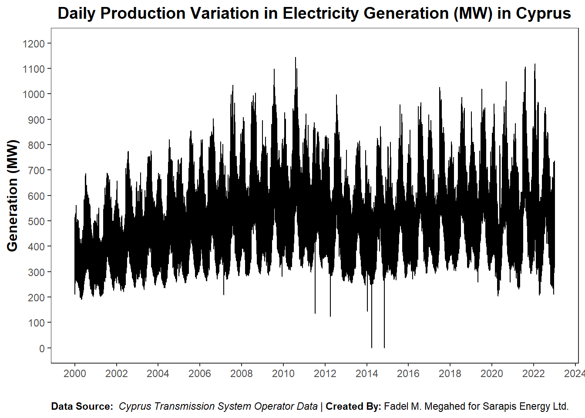
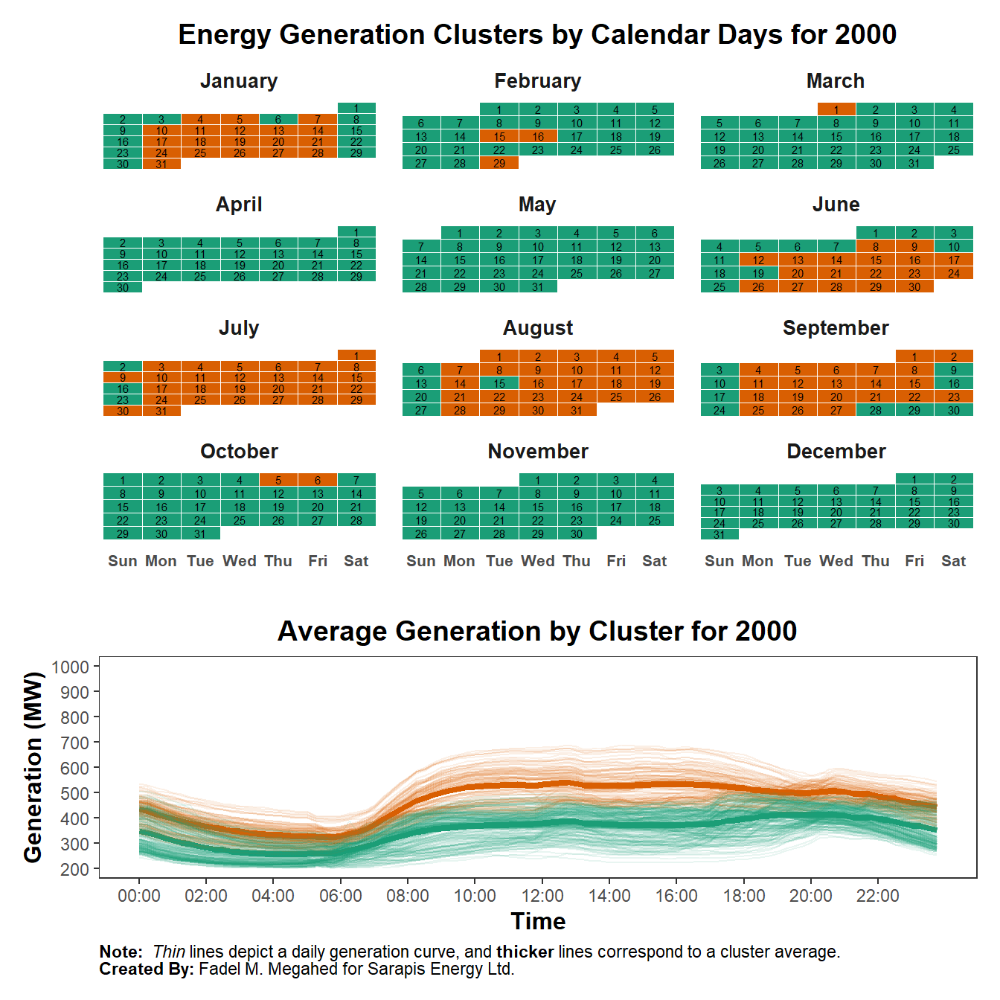
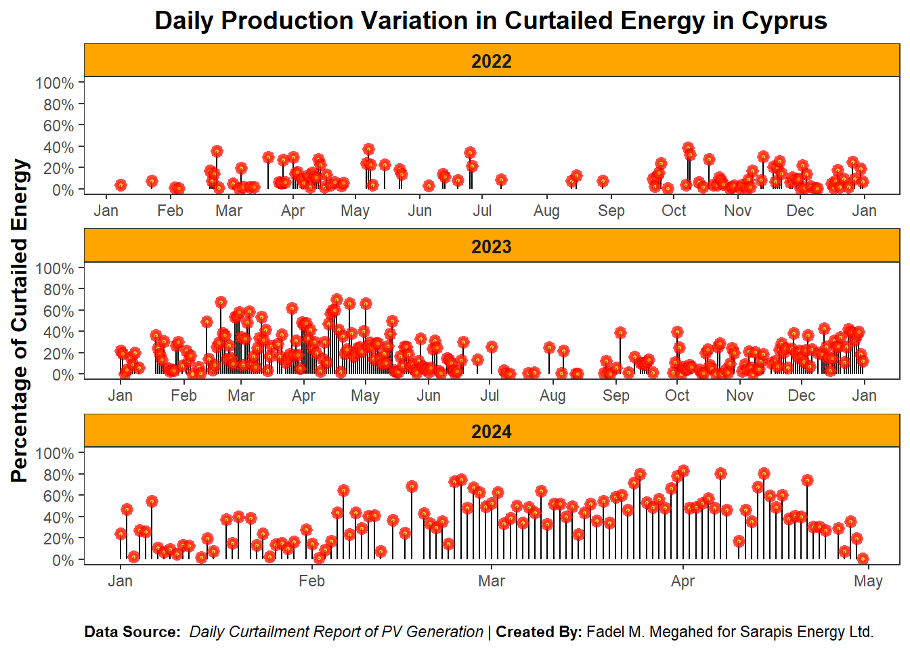
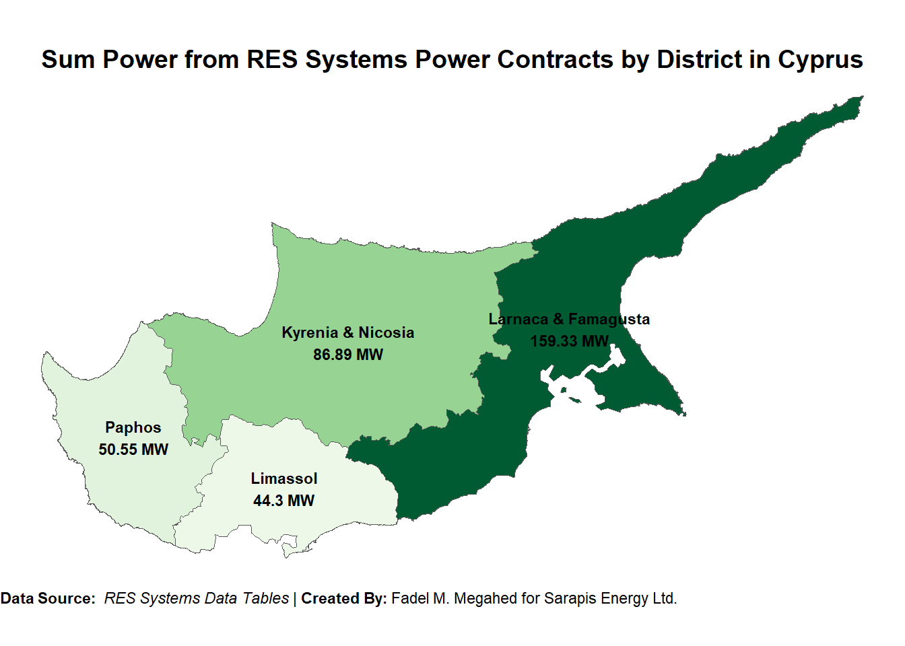

The data used in this analysis is the daily production variation in transmission from the Cyprus Transmission System Operator Database. The data is downloaded and cleaned using download_daily_prod function, which is defined in the helper_functions.R script.
Code
daily_prod=purrr::map_dfr(.x =2000:2022, download_daily_prod)# save the data for future usereadr::write_csv(daily_prod, "../data/daily_prod.csv")# print the last few rowstail(daily_prod)# print the last few rows
The curtailment data is extracted from the PDFs available in the ../data/curtailment/ directory. The data is extracted using the custom extract_text_from_pdf() and parse_text_to_dataframe() functions, which are defined in the helper_functions.R script. The extracted data is then cleaned and imputed manually where necessary.
Code
# List all pdf files in pdf_path = "../data/curtailment/" with their full pathpdf_files=list.files( path ="../data/curtailment/", pattern =".pdf", full.names =TRUE)# Extract the curtailment data from PDFs:# ----------------------------------------curtailment_df=purrr::map_df(pdf_files, ~parse_text_to_dataframe(extract_text_from_pdf(.x)))|>dplyr::mutate( date_of_curtailment =lubridate::dmy(date_of_curtailment), start_of_curtailment =lubridate::hm(start_of_curtailment), end_of_curtailment =lubridate::hm(end_of_curtailment))|>dplyr::arrange(date_of_curtailment)# Manually impute the missing data:# ---------------------------------# Data for 2024-01-31 curtailment_df[385, c("total_estimated_energy_of_the_day", "total_estimated_curtailed_energy", "percentage_of_curtailed_energy")]=c(814.9, 226.4, 27.8)# Data for 2024-02-04curtailment_df[389, c("total_estimated_energy_of_the_day", "total_estimated_curtailed_energy")]=c(1130.3, 193.1)# Estimated energy for 2024-03-30curtailment_df[441, "total_estimated_energy_of_the_day"]=1927.8# Estimated energy for 2024-03-31curtailment_df[442, "total_estimated_energy_of_the_day"]=1967.2# Estimated energy for 2024-04-28curtailment_df[468, "total_estimated_energy_of_the_day"]=1725.3# Estimated energy for 2024-04-29curtailment_df[469, "total_estimated_energy_of_the_day"]=2075.8# Estimated energy for 2024-04-30curtailment_df[470, "total_estimated_energy_of_the_day"]=1109.3# Save the data for future use:# -----------------------------readr::write_csv(curtailment_df, "../data/curtailment_df.csv")# print the number of PDFs reads, and the date rangescat("The results below are based on curtailment data extracted from:", "<br>","**Number of curtailment PDFs read:** ", length(pdf_files), ", and <br>","**Date range of the data:** ", min(curtailment_df$date_of_curtailment)|>as.character(), " to ", max(curtailment_df$date_of_curtailment)|>as.character(), ".<br>")
The results below are based on curtailment data extracted from: Number of curtailment PDFs read: 6 , and Date range of the data: 2022-01-08 to 2024-04-30 .
Code
# print some summary statistics concerning the curtailment dataskimr::skim(curtailment_df)
Data summary
Name
curtailment_df
Number of rows
470
Number of columns
8
_______________________
Column type frequency:
character
2
Date
1
numeric
3
Timespan
2
________________________
Group variables
None
Variable type: character
skim_variable
n_missing
complete_rate
min
max
empty
n_unique
whitespace
instruction_from_TSOC
3
0.99
2
3
0
2
0
reason_of_curtailment
0
1.00
19
118
0
7
0
Variable type: Date
skim_variable
n_missing
complete_rate
min
max
median
n_unique
date_of_curtailment
0
1
2022-01-08
2024-04-30
2023-05-26
470
Variable type: numeric
skim_variable
n_missing
complete_rate
mean
sd
p0
p25
p50
p75
p100
hist
total_estimated_energy_of_the_day
0
1
1152.65
390.86
309.0
858.10
1109.60
1432.77
2269.7
▂▇▆▃▁
total_estimated_curtailed_energy
0
1
297.02
334.71
1.0
55.55
175.85
405.00
1679.2
▇▂▁▁▁
percentage_of_curtailed_energy
0
1
22.18
18.91
0.1
6.73
17.45
33.42
83.1
▇▅▂▁▁
Variable type: Timespan
skim_variable
n_missing
complete_rate
min
max
median
n_unique
start_of_curtailment
0
1
0
0
0
1
end_of_curtailment
0
1
0
0
0
1
1.3 RES Systems Data
Code
pdf_files=list.files( path ="../data/res/", pattern =".pdf", full.names =TRUE)res_data=purrr::map_df(pdf_files, extract_res_table)# save the data for future usereadr::write_csv(res_data, "../data/res_data.csv")# print a sample of the datakableExtra::kbl(res_data|>dplyr::group_by(file_name)|>dplyr::sample_n(2), escape =FALSE)|>kableExtra::add_header_above(c(" "=1, "Sample of the RES Systems Data"=8))|>kableExtra::column_spec(1, bold =TRUE, width ='4em', extra_css ="text-align: left;")|>kableExtra::kable_styling(bootstrap_options =c("hover", "condensed"), full_width =T)
Sample of the RES Systems Data
file_name
serial_number
application_date
preliminary_study_number
company_name
power_mw
area
terms_issuance_date
payment_acceptance_date
Ammochostos Larnaca
2
2018-04-30
400387931
BIOLAND PROJECT 38 LTD
0.700
ΑΧΝΑ
2022-12-20
2024-02-13
Ammochostos Larnaca
37
2022-10-03
498000077
BIOLAND PROJECT 87 LTD
2.500
ΔΑΣΑΚΙ ΑΧΝΑΣ
2023-03-29
2023-04-21
Limassol
13
2022-12-05
498000278
BIOLAND PROJECT 90 LTD
1.500
ΠΑΡΕΚΚΛΗΣΙΑ
2023-10-16
2023-11-03
Limassol
17
2023-10-19
498001348
ARISTOKLIA SOLAR LTD
0.150
ΠΑΧΝΑ
2024-02-20
2024-03-20
Nicosia Kerynia Morfou
32
2023-01-04
498000370
VATHIA GONIA SOLAR ENERGY LTD
6.000
ΓΕΡΙ
2024-01-08
2024-02-06
Nicosia Kerynia Morfou
34
2023-06-28
498000957
GKA SUNPOWER LTD
1.940
ΓΕΡΙ
2023-11-21
2023-12-07
Pafos
29
2022-09-30
498000072
BIOLAND 76 LTD
1.400
ΣΤΕΝΗ
2023-01-09
2023-02-08
Pafos
11
2022-03-01
400480478
RENEWABLE SOLARVIKING LTD
0.125
ΔΡΥΝΙΑ
2022-05-24
2022-06-03
2 Exploratory Data Analysis
2.1 Generation Data
2.1.1 Identify Decreasing Dates
The following table shows the datetimes where the time decreased compared to the previous time period. From the table, we can see that:
they seem primarily related to the fall back of the daylight saving time, and
they surprisly do not happen every year (i.e., either Cyprus had some years where they did not do day light savings or the data provided by the site has some very minor inconsistencies)
Code
# Identify decreasing datesdecreasing_dates=daily_prod|>dplyr::mutate( row_number =dplyr::row_number(), previous_datetime =dplyr::lag(datetime), decreasing =datetime<previous_datetime)|>dplyr::filter(decreasing==TRUE)|>dplyr::select(row_number, datetime,previous_datetime, decreasing)# print these obs (corresponding to fall back dates)kableExtra::kbl(decreasing_dates|>dplyr::select(-c(row_number, decreasing)), escape =FALSE)|>kableExtra::column_spec(1, bold =TRUE)|>kableExtra::kable_styling(bootstrap_options =c("hover"), full_width =FALSE)
datetime
previous_datetime
2006-10-29 03:00:00
2006-10-29 03:45:00
2008-10-26 03:00:00
2008-10-26 03:45:00
2009-10-25 03:00:00
2009-10-25 03:45:00
2010-10-31 03:00:00
2010-10-31 03:45:00
2011-10-30 03:00:00
2011-10-30 03:45:00
2012-10-28 03:00:00
2012-10-28 03:45:00
2013-03-31 00:00:00
2013-03-31 23:44:59
2013-10-27 03:00:00
2013-10-27 03:45:00
2014-03-30 00:00:00
2014-03-30 23:44:59
2014-10-26 03:00:00
2014-10-26 03:45:00
2015-10-25 03:00:00
2015-10-25 03:45:00
2016-10-30 03:00:00
2016-10-30 03:45:00
2017-10-29 03:00:00
2017-10-29 03:45:00
2018-10-28 03:00:00
2018-10-28 03:45:00
2019-10-27 03:00:00
2019-10-27 03:45:00
2020-10-25 03:00:00
2020-10-25 03:45:00
2021-10-31 03:00:00
2021-10-31 03:45:00
2022-10-30 03:00:00
2022-10-30 03:45:00
2.1.2 Daily Production Variation in Transmission
The following plot shows the daily production variation in transmission from 2000 to 2022. The plot shows some clear seasonality in the data.
Code
daily_prod|>dplyr::mutate( month =lubridate::month(date, label =TRUE, abbr =TRUE), year =lubridate::year(date))|>ggplot2::ggplot(ggplot2::aes(x =date, y =generation_mw, group =year))+ggplot2::geom_line()+ggplot2::scale_x_datetime(date_breaks ="2 years", date_labels ="%Y")+ggplot2::scale_y_continuous(limit =c(0, 1200), breaks =seq(000, 1200, 100))+ggplot2::labs( title ="Daily Production Variation in Electricity Generation (MW) in Cyprus", x ="", y ="Generation (MW)", caption ='<b>Data Source:</b> <i>Cyprus Transmission System Operator Data</i> | <b>Created By:</b> Fadel M. Megahed for Sarapis Energy Ltd.')+ggplot2::theme_bw(base_size =11, base_family ='Playfair')+ggplot2::theme( plot.title =ggplot2::element_text(size =14, face ="bold", family ="Bangers", hjust =0.5), axis.title.x =ggplot2::element_text(size =12, face ="bold", family ="Bangers"), axis.title.y =ggplot2::element_text(size =12, face ="bold", family ="Bangers"), plot.caption =ggtext::element_markdown(hjust =0), panel.grid.major =ggplot2::element_blank(), panel.grid.minor =ggplot2::element_blank())

2.1.3 Clustering the Data for Each Year
The following plots show the clustering of the daily production data for each year from 2000 to 2022. The clustering is done using the cluster_and_viz function, which is defined in the helper_functions.R script. The function returns two plots:
1. The first plot shows a calendar heatmap of the daily production data for each year, where each color represents a different cluster.
2. The second plot shows the average daily production for each cluster for a given time period.
The plots are animated to show the clustering of the data for each year, with a 3-second interval between each year/plot.
Code
visuals=purrr::map(.x =2000:2022, cluster_and_viz, data =daily_prod)visuals# print all visuals

2.2 Curtailment Data
2.2.1 Daily Variation in Curtailed Energy
Code
curtailment_df|>dplyr::mutate( percentage_of_curtailed_energy =percentage_of_curtailed_energy/100)|>ggplot2::ggplot(ggplot2::aes(x =date_of_curtailment, y =percentage_of_curtailed_energy))+ggplot2::geom_segment(ggplot2::aes( x=date_of_curtailment, xend =date_of_curtailment, y =0, yend =percentage_of_curtailed_energy), )+ggplot2::geom_point(size=1, color="red", fill=ggplot2::alpha("orange", 0.3), alpha=0.7, shape=21, stroke=2)+ggplot2::facet_wrap(~lubridate::year((date_of_curtailment)), scales ="free_x", ncol =1)+ggplot2::scale_x_date(date_breaks ="1 month", date_labels ="%b")+ggplot2::scale_y_continuous(limits =c(0, 1), breaks =seq(0, 1, 0.2), labels =scales::percent)+ggplot2::labs( title ="Daily Production Variation in Curtailed Energy in Cyprus", x ="", y ="Percentage of Curtailed Energy", caption ='<b>Data Source:</b> <i>Daily Curtailment Report of PV Generation</i> | <b>Created By:</b> Fadel M. Megahed for Sarapis Energy Ltd.')+ggplot2::theme_bw(base_size =11, base_family ='Playfair')+ggplot2::theme( plot.title =ggplot2::element_text(size =14, face ="bold", family ="Bangers", hjust =0.5), axis.title.x =ggplot2::element_text(size =12, face ="bold", family ="Bangers"), axis.title.y =ggplot2::element_text(size =12, face ="bold", family ="Bangers"), plot.caption =ggtext::element_markdown(hjust =0), panel.grid.major =ggplot2::element_blank(), panel.grid.minor =ggplot2::element_blank(), strip.text =ggplot2::element_text(size =10, face ="bold", family ="Bangers"), strip.background =ggplot2::element_rect(fill="orange"))

2.2.2 Average Daily Variation in Curtailed Energy By Month
Code
# Date sequence for the missing daysdate_seq=seq.Date( from =min(curtailment_df$date_of_curtailment), to =max(curtailment_df$date_of_curtailment), by ="day")# Data framedate_df=data.frame(date_of_curtailment =date_seq)# Merge the datacurtailment_df=dplyr::full_join(curtailment_df, date_df, by ="date_of_curtailment")|>dplyr::mutate( total_estimated_curtailed_energy =ifelse(is.na(total_estimated_curtailed_energy), 0, total_estimated_curtailed_energy), percentage_of_curtailed_energy =ifelse(is.na(percentage_of_curtailed_energy), 0, percentage_of_curtailed_energy))curtailment_monthly=curtailment_df|>dplyr::mutate( month =lubridate::month(date_of_curtailment, label =TRUE, abbr =TRUE), year =lubridate::year(date_of_curtailment))|>dplyr::group_by(year, month)|>dplyr::summarise( avg_percent_curtailed =mean(percentage_of_curtailed_energy)|>scales::percent(scale =1))|>dplyr::ungroup()# Make the data widecurtailment_wide=curtailment_monthly|>tidyr::pivot_wider(names_from =month, values_from =avg_percent_curtailed)# Color code the datacurtailment_wide_w_color=color_code_curtailment(curtailment_wide)# Print the color coded datakableExtra::kbl(curtailment_wide_w_color, escape =FALSE, align ="c")|>kableExtra::add_header_above(c(" "=1, "Curtailed Energy in Cyprus: Average Daily Variation by Month"=12))|>kableExtra::column_spec(1, bold =TRUE, width ='4em', extra_css ="text-align: left;")|>kableExtra::kable_styling(bootstrap_options =c("hover", "condensed"), full_width =T)
Curtailed Energy in Cyprus: Average Daily Variation by Month
year
Jan
Feb
Mar
Apr
May
Jun
Jul
Aug
Sep
Oct
Nov
Dec
2022
0%
3%
3%
7%
5%
3%
0%
1%
2%
5%
6%
5%
2023
10%
20%
24%
32%
18%
6%
2%
1%
4%
9%
12%
22%
2024
17%
34%
50%
42%
NA
NA
NA
NA
NA
NA
NA
NA
2.3 RES Systems Data
2.3.1 Summary Statistics
The following table shows the summary statistics of the RES Systems data extracted from the PDFs. Note that the data is grouped by the area of the RES system, and the power is in MW.
The following plot shows the distribution of the RES Systems data extracted from the PDFs. The plot shows the distribution of the power of the RES systems by area.
Reading layer `cyprus_Districts_level_1' from data source
`C:\Users\megahefm\Dropbox\cy_energy_analysis\data\shp_file\cyprus_Districts_level_1.shp'
using driver `ESRI Shapefile'
Simple feature collection with 6 features and 6 fields
Geometry type: MULTIPOLYGON
Dimension: XY
Bounding box: xmin: 32.26921 ymin: 34.62896 xmax: 34.58854 ymax: 35.69595
Geodetic CRS: WGS 84
Code
# Aggregate the datasummary_data=res_data|>dplyr::group_by(file_name)|>dplyr::summarise( n =dplyr::n(), sum_power =sum(power_mw))|>dplyr::arrange(dplyr::desc(sum_power))# Map file names to districtsdistrict_mapping=list("Ammochostos Larnaca"=c("Famagusta", "Larnaca"),"Nicosia Kerynia Morfou"=c("Nicosia", "Kyrenia"),"Pafos"="Paphos","Limassol"="Limassol")# Expand summary data to include all districts in file namesdistrict_data=summary_data|>dplyr::mutate(district =purrr::map(file_name, ~district_mapping[[.]]))|>tidyr::unnest(district)|>dplyr::group_by(district)|>dplyr::summarise(sum_power =sum(sum_power))# Merge district data with map datacyprus_map=cyprus_map|>dplyr::left_join(district_data, by =c("shape1"="district"))|>dplyr::mutate( shape1 =dplyr::case_when(shape1%in%c("Larnaca", "Famagusta")~"Larnaca & Famagusta",shape1%in%c("Kyrenia", "Nicosia")~"Kyrenia & Nicosia",TRUE~shape1))|>dplyr::group_by(shape1)|>dplyr::summarise(# I am using the average since I already summed it above# average of two values that are the same will not change the value sum_power =mean(sum_power), geometry =sf::st_union(geometry))# Get the centroids of the districtscyprus_map_centroids=sf::st_centroid(cyprus_map)# Plot the dataggplot2::ggplot(cyprus_map)+ggplot2::geom_sf(ggplot2::aes(fill =sum_power))+ggplot2::scale_fill_distiller(palette ="Greens", direction =1)+# ggplot2::scale_fill_viridis_c(option = "C") +ggplot2::theme_void()+ggplot2::labs( title ="Sum Power from RES Systems Power Contracts by District in Cyprus", fill ="Power MW", caption ='<b>Data Source:</b> <i>RES Systems Data Tables</i> | <b>Created By:</b> Fadel M. Megahed for Sarapis Energy Ltd.')+# annotate by adding the district name and the sum powerggplot2::geom_text( data =cyprus_map_centroids, ggplot2::aes( x =sf::st_coordinates(geometry)[,1], y =sf::st_coordinates(geometry)[,2], label =paste0(shape1, "\n", round(sum_power, 2), " MW")), size =3, check_overlap =TRUE,# was playing with this to make the colors work (ended just using all black) color =ifelse(cyprus_map_centroids$sum_power>quantile(cyprus_map_centroids$sum_power, 0.75), "black", "black"), fontface ="bold")+ggplot2::theme( plot.title =ggplot2::element_text(size =14, face ="bold", family ="Bangers", hjust =0.5), legend.title =ggplot2::element_text(size =12, face ="bold", family ="Bangers"), legend.text =ggplot2::element_text(size =10, face ="bold", family ="Bangers"), plot.caption =ggtext::element_markdown(hjust =0), legend.position ="none")

Source Code
---title: "Exploring the CY Energy Market"subtitle: "An Analysis for Sarapis Energy Ltd."author: - name: Fadel M. Megahed orcid: 0000-0003-2194-5110 email: fmegahed@miamioh.edu corresponding: true affiliations: - name: Farmer School of Business, Miami University address: 800 E. High St. city: Oxford state: OH postal-code: 45056date: "`r format(Sys.time(), '%B %d, %Y')`"format: html: code-fold: true code-tools: true code-download: true code-link: true highlight-style: pygments number-sections: true paged-df: true toc: true toc-float: true code-overflow: wrap---```{r setup, include=FALSE}knitr::opts_chunk$set(cache =TRUE,echo =TRUE,warning =FALSE,message =FALSE,progress =FALSE, verbose =FALSE,fig.path ="figs/",cache.extra =set.seed(2024), autodep =TRUE)knitr::dep_auto()# Load the helper functionssource("../lib/helper_functions.R")```# Getting the Data## Daily Production Variation in TransmissionThe data used in this analysis is the daily production variation in transmission from the [Cyprus Transmission System Operator Database](https://tsoc.org.cy/electrical-system/energy-generation-records/yearly/). The data is downloaded and cleaned using `download_daily_prod` function, which is defined in the `helper_functions.R` script.```{r extract_daily_production}daily_prod = purrr::map_dfr(.x =2000:2022, download_daily_prod)# save the data for future usereadr::write_csv(daily_prod, "../data/daily_prod.csv")# print the last few rowstail(daily_prod) # print the last few rows```## Curtailment DataThe curtailment data is extracted from the PDFs available in the `../data/curtailment/` directory. The data is extracted using the custom `extract_text_from_pdf()` and `parse_text_to_dataframe()` functions, which are defined in the `helper_functions.R` script. The extracted data is then cleaned and imputed manually where necessary.```{r curt_data, results='asis'}# List all pdf files in pdf_path = "../data/curtailment/" with their full pathpdf_files =list.files(path ="../data/curtailment/", pattern =".pdf", full.names =TRUE )# Extract the curtailment data from PDFs:# ----------------------------------------curtailment_df = purrr::map_df( pdf_files, ~parse_text_to_dataframe(extract_text_from_pdf(.x)) ) |> dplyr::mutate(date_of_curtailment = lubridate::dmy(date_of_curtailment),start_of_curtailment = lubridate::hm(start_of_curtailment),end_of_curtailment = lubridate::hm(end_of_curtailment) ) |> dplyr::arrange(date_of_curtailment)# Manually impute the missing data:# ---------------------------------# Data for 2024-01-31 curtailment_df[385, c("total_estimated_energy_of_the_day", "total_estimated_curtailed_energy", "percentage_of_curtailed_energy")] =c(814.9, 226.4, 27.8)# Data for 2024-02-04curtailment_df[389, c("total_estimated_energy_of_the_day", "total_estimated_curtailed_energy")] =c(1130.3, 193.1)# Estimated energy for 2024-03-30curtailment_df[441, "total_estimated_energy_of_the_day"] =1927.8# Estimated energy for 2024-03-31curtailment_df[442, "total_estimated_energy_of_the_day"] =1967.2# Estimated energy for 2024-04-28curtailment_df[468, "total_estimated_energy_of_the_day"] =1725.3# Estimated energy for 2024-04-29curtailment_df[469, "total_estimated_energy_of_the_day"] =2075.8# Estimated energy for 2024-04-30curtailment_df[470, "total_estimated_energy_of_the_day"] =1109.3# Save the data for future use:# -----------------------------readr::write_csv(curtailment_df, "../data/curtailment_df.csv")# print the number of PDFs reads, and the date rangescat("The results below are based on curtailment data extracted from:", "<br>","**Number of curtailment PDFs read:** ", length(pdf_files), ", and <br>","**Date range of the data:** ", min(curtailment_df$date_of_curtailment) |>as.character(), " to ", max(curtailment_df$date_of_curtailment) |>as.character(), ".<br>")# print some summary statistics concerning the curtailment dataskimr::skim(curtailment_df)```## RES Systems Data```{r res_data, results='asis'}pdf_files =list.files(path ="../data/res/", pattern =".pdf", full.names =TRUE )res_data = purrr::map_df(pdf_files, extract_res_table)# save the data for future usereadr::write_csv(res_data, "../data/res_data.csv")# print a sample of the datakableExtra::kbl( res_data |> dplyr::group_by(file_name) |> dplyr::sample_n(2), escape =FALSE) |> kableExtra::add_header_above(c(" "=1, "Sample of the RES Systems Data"=8)) |> kableExtra::column_spec(1, bold =TRUE, width ='4em', extra_css ="text-align: left;") |> kableExtra::kable_styling(bootstrap_options =c("hover", "condensed"), full_width = T)```# Exploratory Data Analysis## Generation Data### Identify Decreasing DatesThe following table shows the `datetimes` where the **time decreased compared to the previous time period**. From the table, we can see that: - they seem primarily related to the fall back of the daylight saving time, and - they surprisly do not happen every year (i.e., either Cyprus had some years where they did not do day light savings or the data provided by the site has some very minor inconsistencies)```{r decreasing_dates}# Identify decreasing datesdecreasing_dates = daily_prod |> dplyr::mutate(row_number = dplyr::row_number(),previous_datetime = dplyr::lag(datetime),decreasing = datetime < previous_datetime ) |> dplyr::filter(decreasing ==TRUE) |> dplyr::select(row_number, datetime,previous_datetime, decreasing)# print these obs (corresponding to fall back dates)kableExtra::kbl( decreasing_dates |> dplyr::select(-c(row_number, decreasing)), escape =FALSE) |> kableExtra::column_spec(1, bold =TRUE) |> kableExtra::kable_styling(bootstrap_options =c("hover"), full_width =FALSE)```### Daily Production Variation in TransmissionThe following plot shows the daily production variation in transmission from 2000 to 2022. The plot shows some clear seasonality in the data.```{r daily_production_viz, out.width = "100%"}daily_prod |> dplyr::mutate(month = lubridate::month(date, label =TRUE, abbr =TRUE),year = lubridate::year(date) ) |> ggplot2::ggplot( ggplot2::aes(x = date, y = generation_mw, group = year) ) + ggplot2::geom_line() + ggplot2::scale_x_datetime(date_breaks ="2 years", date_labels ="%Y") + ggplot2::scale_y_continuous(limit =c(0, 1200), breaks =seq(000, 1200, 100)) + ggplot2::labs(title ="Daily Production Variation in Electricity Generation (MW) in Cyprus",x ="",y ="Generation (MW)",caption ='<b>Data Source:</b> <i>Cyprus Transmission System Operator Data</i> | <b>Created By:</b> Fadel M. Megahed for Sarapis Energy Ltd.' ) + ggplot2::theme_bw(base_size =11, base_family ='Playfair') + ggplot2::theme(plot.title = ggplot2::element_text(size =14, face ="bold", family ="Bangers", hjust =0.5),axis.title.x = ggplot2::element_text(size =12, face ="bold", family ="Bangers"),axis.title.y = ggplot2::element_text(size =12, face ="bold", family ="Bangers"),plot.caption = ggtext::element_markdown(hjust =0),panel.grid.major = ggplot2::element_blank(), panel.grid.minor = ggplot2::element_blank() ) ```### Clustering the Data for Each YearThe following plots show the clustering of the daily production data for each year from 2000 to 2022. The clustering is done using the `cluster_and_viz` function, which is defined in the `helper_functions.R` script. The function returns two plots: 1. The first plot shows a calendar heatmap of the daily production data for each year, where each color represents a different cluster. 2. The second plot shows the average daily production for each cluster for a given time period. The plots are animated to show the clustering of the data for each year, with a 3-second interval between each year/plot.```{r clustering, results='hide', fig.show='hide'}visuals = purrr::map(.x =2000:2022, cluster_and_viz, data = daily_prod)visuals # print all visuals``````{r clustering_viz, fig.show='animate',out.width = "100%", animation.hook='gifski', interval=3, fig.height=7, echo=FALSE}for (plot in visuals) {print(plot) # print the plots}```## Curtailment Data### Daily Variation in Curtailed Energy```{r curtailment_viz, out.width = "100%"}curtailment_df |> dplyr::mutate(percentage_of_curtailed_energy = percentage_of_curtailed_energy/100 ) |> ggplot2::ggplot( ggplot2::aes(x = date_of_curtailment, y = percentage_of_curtailed_energy) ) + ggplot2::geom_segment( ggplot2::aes(x= date_of_curtailment, xend = date_of_curtailment, y =0, yend = percentage_of_curtailed_energy), ) + ggplot2::geom_point(size=1, color="red", fill=ggplot2::alpha("orange", 0.3), alpha=0.7, shape=21, stroke=2) + ggplot2::facet_wrap(~lubridate::year((date_of_curtailment)), scales ="free_x", ncol =1) + ggplot2::scale_x_date(date_breaks ="1 month", date_labels ="%b") + ggplot2::scale_y_continuous(limits =c(0, 1), breaks =seq(0, 1, 0.2), labels = scales::percent) + ggplot2::labs(title ="Daily Production Variation in Curtailed Energy in Cyprus",x ="",y ="Percentage of Curtailed Energy",caption ='<b>Data Source:</b> <i>Daily Curtailment Report of PV Generation</i> | <b>Created By:</b> Fadel M. Megahed for Sarapis Energy Ltd.' ) + ggplot2::theme_bw(base_size =11, base_family ='Playfair') + ggplot2::theme(plot.title = ggplot2::element_text(size =14, face ="bold", family ="Bangers", hjust =0.5),axis.title.x = ggplot2::element_text(size =12, face ="bold", family ="Bangers"),axis.title.y = ggplot2::element_text(size =12, face ="bold", family ="Bangers"),plot.caption = ggtext::element_markdown(hjust =0),panel.grid.major = ggplot2::element_blank(), panel.grid.minor = ggplot2::element_blank(),strip.text = ggplot2::element_text(size =10, face ="bold", family ="Bangers"),strip.background = ggplot2::element_rect(fill="orange") ) ```### Average Daily Variation in Curtailed Energy By Month```{r curtailment_monthly_calc, results='asis'}# Date sequence for the missing daysdate_seq =seq.Date(from =min(curtailment_df$date_of_curtailment), to =max(curtailment_df$date_of_curtailment), by ="day")# Data framedate_df =data.frame(date_of_curtailment = date_seq)# Merge the datacurtailment_df = dplyr::full_join(curtailment_df, date_df, by ="date_of_curtailment") |> dplyr::mutate(total_estimated_curtailed_energy =ifelse(is.na(total_estimated_curtailed_energy), 0, total_estimated_curtailed_energy ),percentage_of_curtailed_energy =ifelse(is.na(percentage_of_curtailed_energy), 0, percentage_of_curtailed_energy ) )curtailment_monthly = curtailment_df |> dplyr::mutate(month = lubridate::month(date_of_curtailment, label =TRUE, abbr =TRUE),year = lubridate::year(date_of_curtailment) ) |> dplyr::group_by(year, month) |> dplyr::summarise(avg_percent_curtailed =mean(percentage_of_curtailed_energy) |> scales::percent(scale =1) ) |> dplyr::ungroup()# Make the data widecurtailment_wide = curtailment_monthly |> tidyr::pivot_wider(names_from = month, values_from = avg_percent_curtailed)# Color code the datacurtailment_wide_w_color =color_code_curtailment(curtailment_wide)# Print the color coded datakableExtra::kbl( curtailment_wide_w_color, escape =FALSE, align ="c") |> kableExtra::add_header_above(c(" "=1, "Curtailed Energy in Cyprus: Average Daily Variation by Month"=12)) |> kableExtra::column_spec(1, bold =TRUE, width ='4em', extra_css ="text-align: left;") |> kableExtra::kable_styling(bootstrap_options =c("hover", "condensed"), full_width = T)```## RES Systems Data### Summary StatisticsThe following table shows the summary statistics of the RES Systems data extracted from the PDFs. Note that the data is grouped by the **area** of the RES system, and the power is in **MW**. ```{r res_summary_stats, results='asis'}res_data |> dplyr::group_by(area) |> dplyr::summarise(n = dplyr::n(),min_power =min(power_mw),avg_power =mean(power_mw),median_power =median(power_mw),max_power =max(power_mw) ) |> dplyr::arrange(desc(n)) |> DT::datatable(rownames=FALSE,extensions ='Buttons',options =list(pageLength =10,lengthMenu =c(5, 10, 15),searching =TRUE,ordering =TRUE,info =TRUE,autoWidth =TRUE,dom ='Bfrtip',buttons =list('copy', 'print', list(extend ='collection',buttons =c('csv', 'excel', 'pdf'),text ='Download' )) ) ) |> DT::formatRound(columns =c("avg_power", "median_power"),digits =3 )```### RES Systems Data VisualizationThe following plot shows the distribution of the RES Systems data extracted from the PDFs. The plot shows the distribution of the **power** of the RES systems by **area**. ```{r res_viz, out.width = "100%"}shapefile_dir ="../data/shp_file/"cyprus_map = sf::st_read(file.path(shapefile_dir, "cyprus_Districts_level_1.shp"))# Aggregate the datasummary_data = res_data |> dplyr::group_by(file_name) |> dplyr::summarise(n = dplyr::n(),sum_power =sum(power_mw) ) |> dplyr::arrange(dplyr::desc(sum_power))# Map file names to districtsdistrict_mapping =list("Ammochostos Larnaca"=c("Famagusta", "Larnaca"),"Nicosia Kerynia Morfou"=c("Nicosia", "Kyrenia"),"Pafos"="Paphos","Limassol"="Limassol")# Expand summary data to include all districts in file namesdistrict_data = summary_data |> dplyr::mutate(district = purrr::map(file_name, ~ district_mapping[[.]])) |> tidyr::unnest(district) |> dplyr::group_by(district) |> dplyr::summarise(sum_power =sum(sum_power))# Merge district data with map datacyprus_map = cyprus_map |> dplyr::left_join(district_data, by =c("shape1"="district")) |> dplyr::mutate(shape1 = dplyr::case_when( shape1 %in%c("Larnaca", "Famagusta") ~"Larnaca & Famagusta", shape1 %in%c("Kyrenia", "Nicosia") ~"Kyrenia & Nicosia",TRUE~ shape1 ) ) |> dplyr::group_by(shape1) |> dplyr::summarise(# I am using the average since I already summed it above# average of two values that are the same will not change the valuesum_power =mean(sum_power),geometry = sf::st_union(geometry) )# Get the centroids of the districtscyprus_map_centroids = sf::st_centroid(cyprus_map)# Plot the dataggplot2::ggplot(cyprus_map) + ggplot2::geom_sf(ggplot2::aes(fill = sum_power)) + ggplot2::scale_fill_distiller(palette ="Greens", direction =1) +# ggplot2::scale_fill_viridis_c(option = "C") + ggplot2::theme_void() + ggplot2::labs(title ="Sum Power from RES Systems Power Contracts by District in Cyprus",fill ="Power MW",caption ='<b>Data Source:</b> <i>RES Systems Data Tables</i> | <b>Created By:</b> Fadel M. Megahed for Sarapis Energy Ltd.' ) +# annotate by adding the district name and the sum power ggplot2::geom_text(data = cyprus_map_centroids, ggplot2::aes(x = sf::st_coordinates(geometry)[,1], y = sf::st_coordinates(geometry)[,2], label =paste0(shape1, "\n", round(sum_power, 2), " MW") ), size =3, check_overlap =TRUE,# was playing with this to make the colors work (ended just using all black)color =ifelse(cyprus_map_centroids$sum_power >quantile(cyprus_map_centroids$sum_power, 0.75), "black", "black"),fontface ="bold" ) + ggplot2::theme(plot.title = ggplot2::element_text(size =14, face ="bold", family ="Bangers", hjust =0.5),legend.title = ggplot2::element_text(size =12, face ="bold", family ="Bangers"),legend.text = ggplot2::element_text(size =10, face ="bold", family ="Bangers"),plot.caption = ggtext::element_markdown(hjust =0),legend.position ="none" )```
![]()